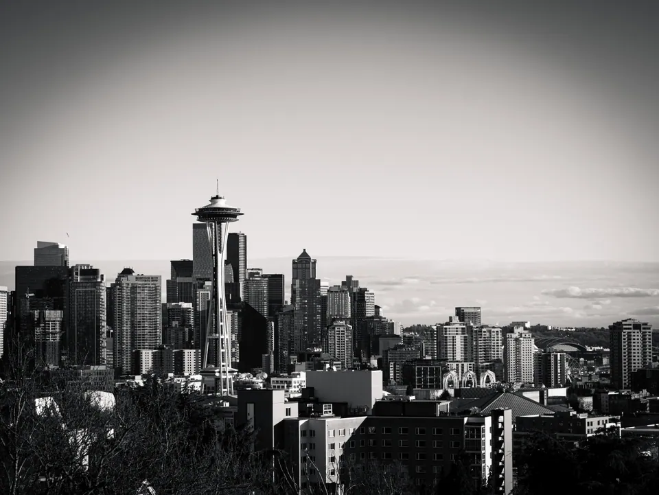
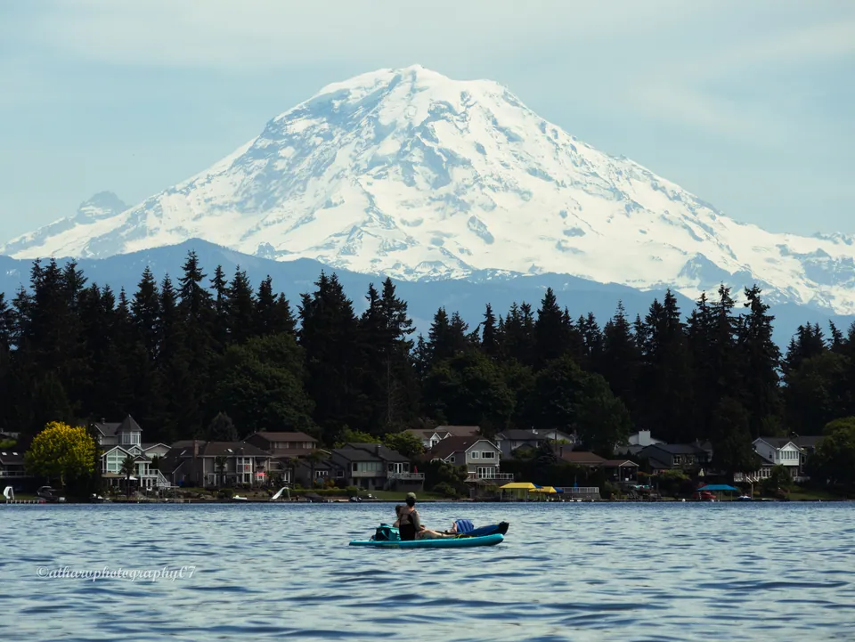
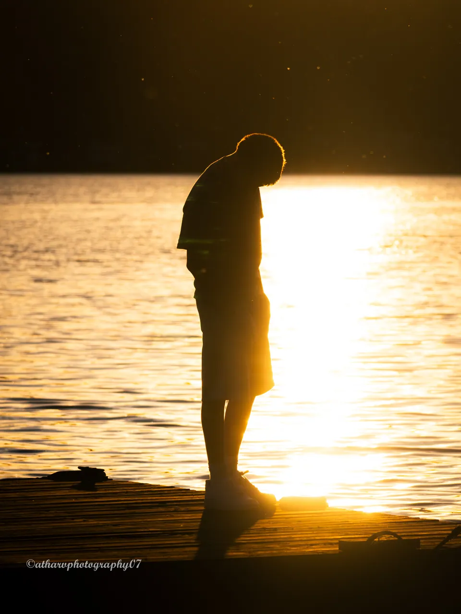
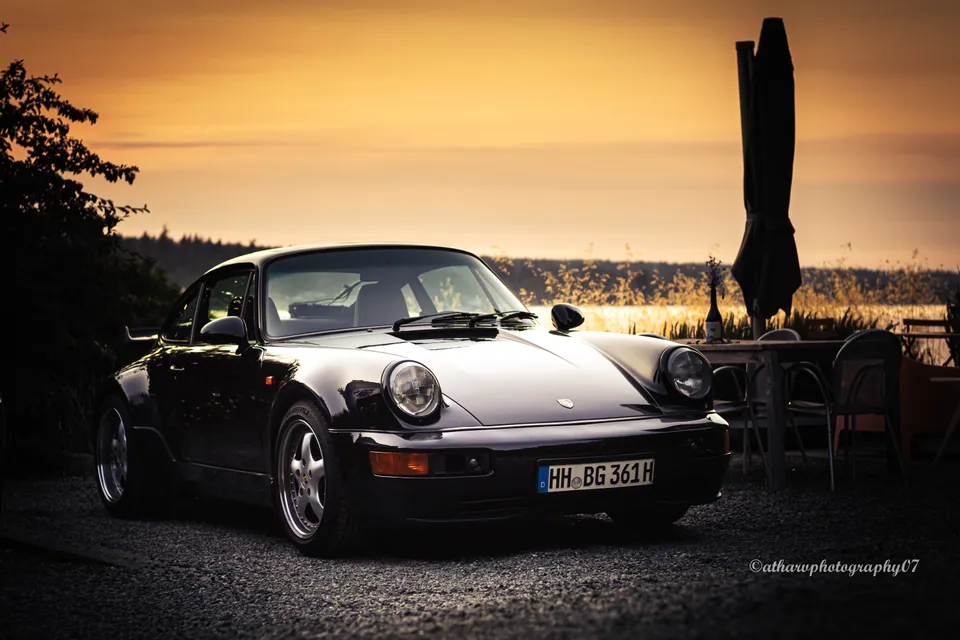

Photographs of light, patience and the moments worth stopping for.
I’m Atharv Kale, a high school photographer with eight years behind the camera.



19 contest results, including four Expert Choice awards.
See the awardsLet’s make something.
Portraits, car shoots, events and prints. Tell me what you have in mind.
Get in touch